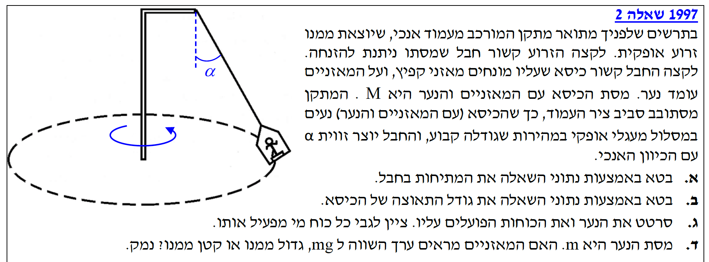
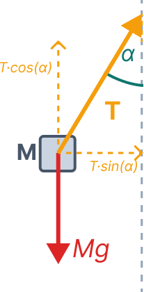
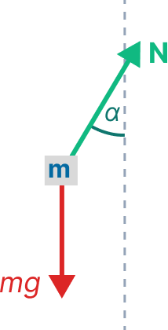

מסת המערכת הכוללת (הכיסא, המאזניים והנער) היא \( M \). המערכת מסתובבת במהירות קבועה במסלול מעגלי אופקי, והחבל נטוי בזווית \( \alpha \) ביחס לאנך. נדרש לבטא את כוח המתיחות (\( T \)) באמצעות נתוני השאלה.

מכיוון שהתנועה מתרחשת במישור אופקי בלבד, אין למערכת תאוצה בציר האנכי (ציר \( y \)). לכן, סכום הכוחות בציר זה שווה לאפס, והרכיב האנכי של המתיחות מאזן את כוח הכובד:
נעביר אגפים ונבודד את \( T \):
עלינו לבטא את תאוצת הכיסא (שהיא למעשה התאוצה הרדיאלית \( a_R \), כיוון שמהירות הסיבוב קבועה) באמצעות נתוני השאלה.
בציר האופקי (הרדיאלי), הרכיב האופקי של המתיחות הוא הכוח היחיד שפועל על המערכת והוא זה שמספק את הכוח הצנטריפטלי הגורם לתנועה המעגלית:
נציב את הביטוי למתיחות \( T \) שמצאנו בסעיף א':
נצמצם את המסה \( M \) משני האגפים ונשתמש בזהות הטריגונומטרית \( \frac{\sin\alpha}{\cos\alpha} = \tan\alpha \):
כעת אנו מתמקדים רק בנער. חשוב להבחין שהכיסא במתקנים מסוג זה, בהיותו תלוי מנקודה אחת, נוטה בדיוק לזווית \( \alpha \), כך שמשטח העמידה מאונך לחבל. לכן הכוח הנורמלי (שפועל תמיד בניצב למשטח) מכוון לאורך אותו הקו של החבל.

* הערה: אין כוח חיכוך משום שהכוח הנורמלי מספק בדיוק את הכוח הצנטריפטלי הדרוש לתנועה.
מאזני קפיץ שעליהם עומד אדם אינם מודדים ישירות את כוח הכובד (את המסה), אלא הם מודדים את הכוח שהם מפעילים עליו כדי לתמוך בו - כלומר את הכוח הנורמלי (\( N \)).
נרשום את משוואת הכוחות בציר האנכי עבור הנער בלבד (שמסתור \( m \)):
הזווית \( \alpha \) (זווית החבל עם האנך) היא זווית חדה שבין \( 0^\circ \) ל-\( 90^\circ \). עבור זוויות בטווח זה, ידוע כי \( \cos\alpha < 1 \).
כאשר מחלקים מספר חיובי (\( mg \)) בשבר קטן מאחד (\( \cos\alpha \)), התוצאה תהיה תמיד גדולה מהמספר המקורי.